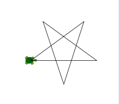
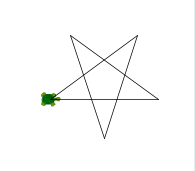

Cet exercice est un peu particulier, car vous n'avez rien à faire pour le
passer. Tout le code nécessaire pour le passer est fourni, et il suffit de
cliquer sur le bouton «Exécuter». Il est là pour vous permettre d'explorer
les possibilités du code que vous venez d'écrire en changeant les paramètres
de l'appel à la fonction spiral. Vous pouvez passer à
l'exercice suivant si le temps vous manque, puis revenir jouer ici plus
tard.
Voici quelques figures que l'on peut produire avec votre fonction
spiral en lui passant les bons paramètres. Passez en mode
créatif (dans le menu Exercice) pour désactiver la correction de votre code
quand vous explorez ces spirales.

 



Si vous découvrez une figure sympa n'oubliez pas de nous envoyer vos paramètres (menu Aide/envoyer une anomalie) pour que nous puissions l'ajouter à la liste!